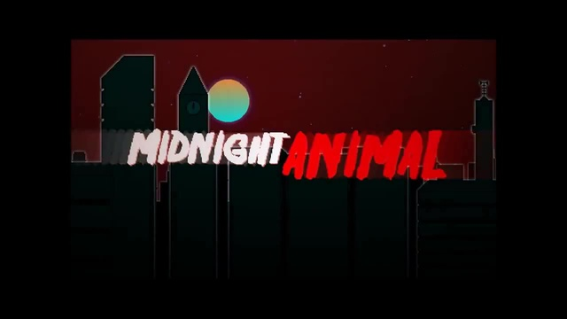

Hotline Miami 2: Wrong Number is the brutal conclusion to the Hotline Miami saga,
set against a backdrop of escalating violence and retribution over spilled blood in the original game.
Follow the paths of several distinct factions
– each with their own questionable methods and uncertain motivations
– as unforeseen consequences intersect and
reality once again slips back into a brilliant haze of neon and bloodshed.
Blistering combat against punishing opposition will require intense focus as new variables, weapons,
and methods of execution are introduced throughout the struggle.
Let the striking colors of an unmistakable
visual style wash over as you meticulously
cut down those that would stand between you and the ultimate meaning behind the massacre. This is the finale,
this is the unquestionable end.

Hotline Miami 2: Wrong Number is the brutal conclusion to the Hotline Miami saga,
set against a backdrop of escalating violence and retribution over spilled blood in the original game.
Follow the paths of several distinct factions